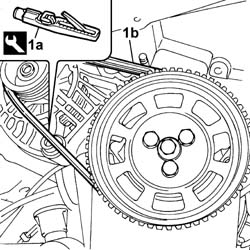

1092B64 alternator drive belt - adjust tension
- Path
- Procedures > 10 ENGINE UNIT > 1092 VARIOUS ENGINE COMPONENT CONTROLS > 1092B water pump and alternator drive > 1092B64 alternator drive belt - adjust tension
- Kind
- repair procedure (removal / refitting; the operation number is the code)
- Applies to
- engines: 1.1, 1.2 8v; all production periods
- Interactive page
- https://sloeber94.github.io/elrnDB-fPnd/en/#/2752559
Applies to: engines: 1.1; all production periods
1. Use tool (1a) and check that the tension of new belt (1a) is within the recommended values
 | Name | Country |
|---|---|---|
1a | Torque wrench | 1.895.762.000 |
 | Measurement | Value | |
|---|---|---|---|
- | Alternator belt tensioning (daNm) | 30 - 35 | |
New belt (-) | - | ||

Applies to: engines: 1.2 8v; all production periods
1. Use tool (1a) and check that the tension of new belt (1a) is within the recommended values
| Name | Country |
|---|---|---|
1a | Torque wrench | 1.895.762.000 |
| Measurement | Value | |
|---|---|---|---|
- | Alternator belt tensioning (daNm) | 30 - 35 | |
New belt (-) | - | ||
Applies to: engines: 1.1; all production periods
Tighten the alternator bolts to torque.
 | Fastening | Component | Ø | Value (daNm) |
|---|---|---|---|---|
- | Bolt | ALTERNATOR ASSEMBLY | M10 | 5 |
| Fastening | Component | Ø | Value (daNm) |
|---|---|---|---|---|
- | Bolt | ALTERNATOR ASSEMBLY | M12 | 8 |
Applies to: engines: 1.2 8v; all production periods
Tighten the alternator bolts to torque.
| Fastening | Component | Ø | Value (daNm) |
|---|---|---|---|---|
- | Bolt | ALTERNATOR ASSEMBLY | M10 | 5 |
| Fastening | Component | Ø | Value (daNm) |
|---|---|---|---|---|
- | Bolt | ALTERNATOR ASSEMBLY | M12 | 8 |
Topics that link to this page (17)
- 0510A20 timing gear with belt drive - check - carry out operation with cam cover(s) removed and tappets adjusted
- 0510A30 cam lift - check with cam cover(s) removed
- 1004E20 engine - dismantle and re-build following operation 1004e10 - wash and check dismantled parts - re-fit cylinder head and oil sump - does not include repairs to cylinder head and auxiliary unit
- 1016C10 SINGLE CYLINDER HEAD, REMOVED - OVERHAUL
- 1020D14 FRONT CRANK SHAFT OIL SEAL COVER - R + R AND REPLACE SEALS FOR VERSIONS WITH OIL PUMP ON CRANK SHAFT, TIMING SIDE
- 1020D18 FRONT CRANK SHAFT COVER OIL SEAL - REPLACE
- 1028H20 piston with connecting rod - r r
- 1032B10 toothed timing belt - r + r for timing adjustment or replacement
- 1032B46 toothed drive pulley - r + r
- 1032B52 toothed driven pulley (one) - r + r
- 1032C18 mobile timing system tensioner - r + r for 24 valve engines
- 1032D12 timing system protective cover(s) - r + r
- 1036B10 overhead camshaft - r r on vehicle
- 1088C10 water pump - r + r
- 1092A10 Crankshaft services PULLEY - R.R.
- 1092B60 alternator drive belt - r + r
- 5530A10 alternator - r+r